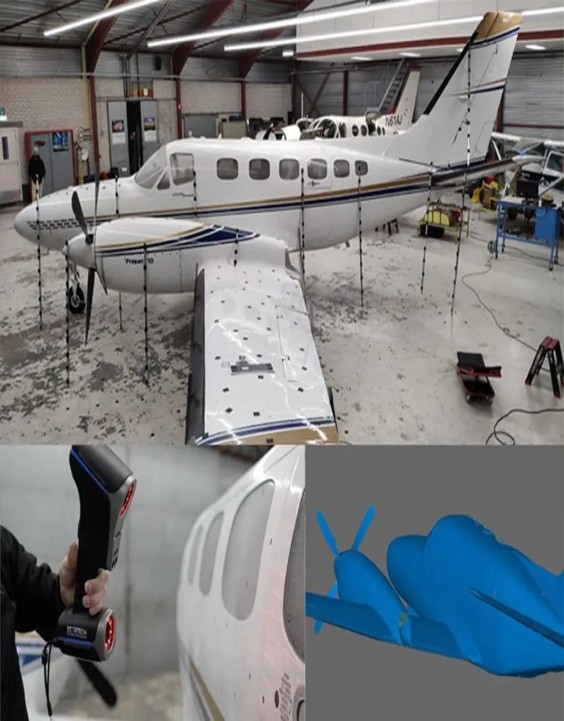
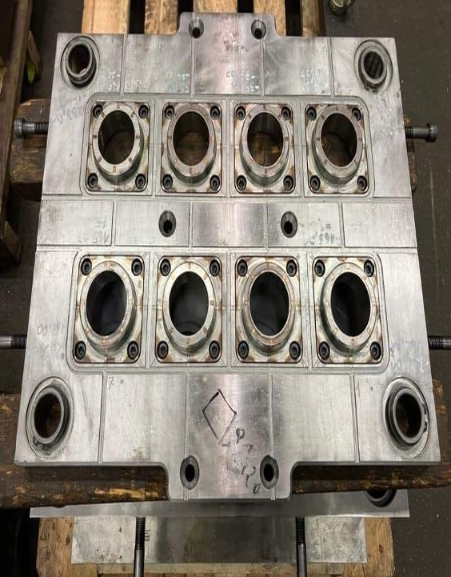

Our Services
Our precision solutions span across the world's most demanding sectors





At Scanovect, we bring real-world objects into the digital realm and transform your ideas into precision-manufactured reality. As a leading provider of 3D Scanning and 3D Printing Services, we empower innovators, engineers, designers, and manufacturers with smart, reliable, and high-quality digital solutions — tailored for industries ranging from aerospace and automotive to healthcare, architecture, and education.
Read MoreOur precision solutions span across the world's most demanding sectors




Shop No - 2 Sai Dwarka Complex, Beside Dominos Near Shinde Petrol Pump, Next to D-MART,Kiwale – 412101
+91 9991272678
scanovectsales@gmail.com